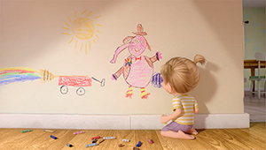
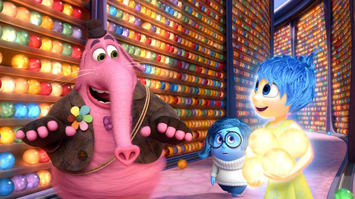
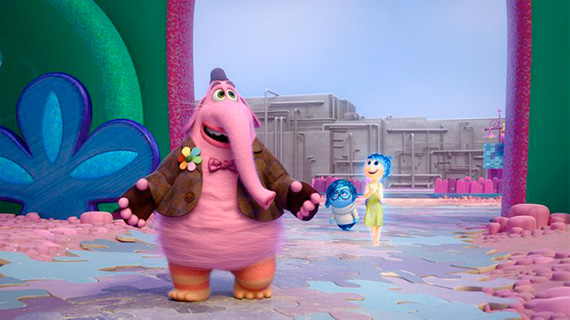

Relevamiento
ROL
Peronsaje de la película Intesnamente, es el amigo imaginario de Riley de su infancia con el que jugaba a todo tipo de cosas.
Cuando se encuentra a Alegría y Tristeza en la mente de Riley, él las ayuda a encontrar la forma de que regresen a la base central.

PERSONALIDAD
Alegre, divertido, imaginativo.
Bing Bong es un personaje bueno, que ofrece ayuda alegremente a las protagonistas.
Su particular apariencia hace que sea simpático a la vista.
Es divertido, creativo y compañero.

APARIENCIA
Es un personaje de gran tamaño con diferentes tonalidades de rosa.
Tiene una trompa de elefante, pies, cola, y bigotes de gato.
Su vestuario es una chaqueta, con una flor de colores, guantes y gorro.
